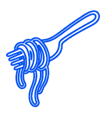
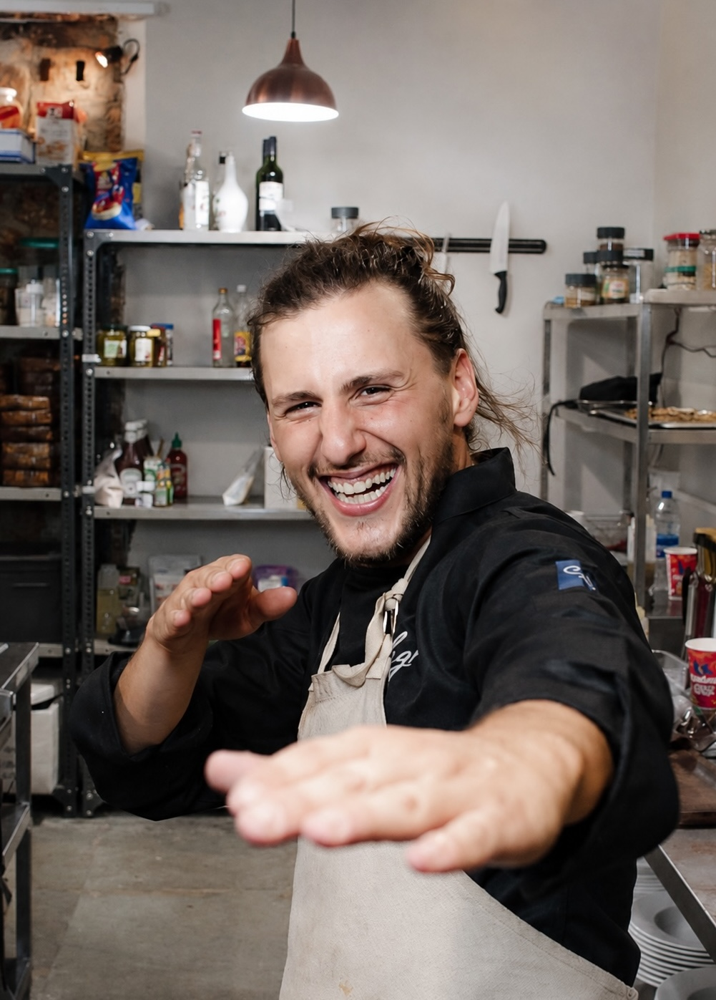
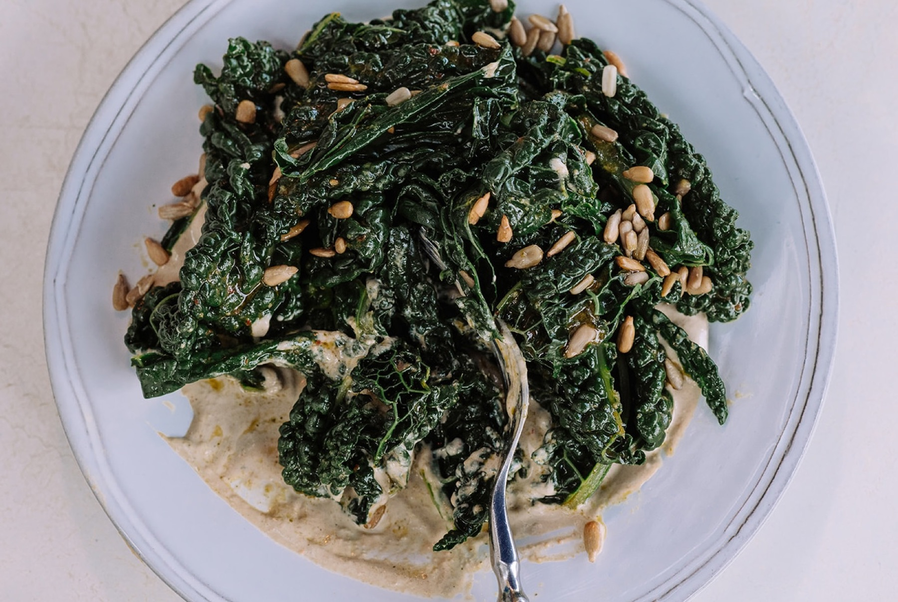
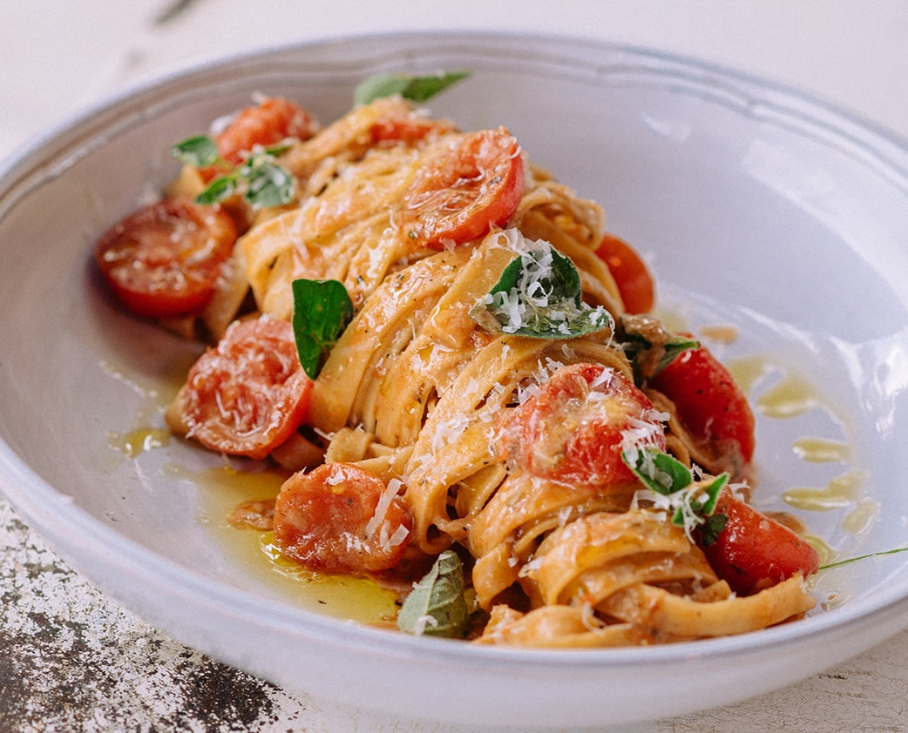
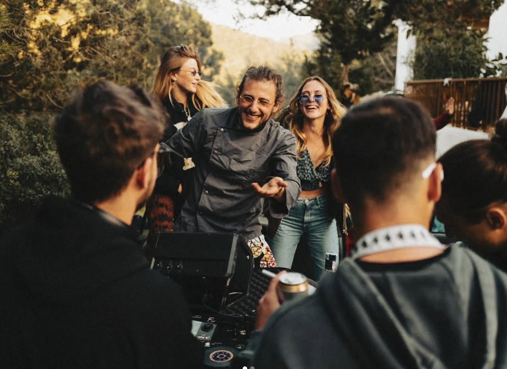

Mira Lounge. Fusion at full heat.
Mira Lounge is Tiago's current chapter: bold combinations, island produce, global instinct, and food that should arrive with heat, confidence, and no polite little whisper.

Ibiza + food culture + good people + amazing music
food culture, people and good energy, from kitchens to music-led moments

After many professional adventures - working as a chef on a private yacht, traveling around the world, opening Milagros in Goa, and much more - Tiago is back in Ibiza.
Mira Lounge is Tiago's current chapter: bold combinations, island produce, global instinct, and food that should arrive with heat, confidence, and no polite little whisper.

Bottega il Buco is one of those places that stays under the skin. Tiago left, returned, grew with it, and keeps carrying its family feeling into sharper, more creative work.

Real Moments
I cook with instinct, memory, and a bit of mischief. Inspired by places, people, and the rhythm of food and music.


Bold People
Good Flavor
Bold Flavors
Good People
Chapter 01 / point of view
Tiago works where food, team rhythm, and island energy meet. The plate matters. So does the pass, the sourcing, the timing, the music, and the feeling when the night suddenly has a pulse.